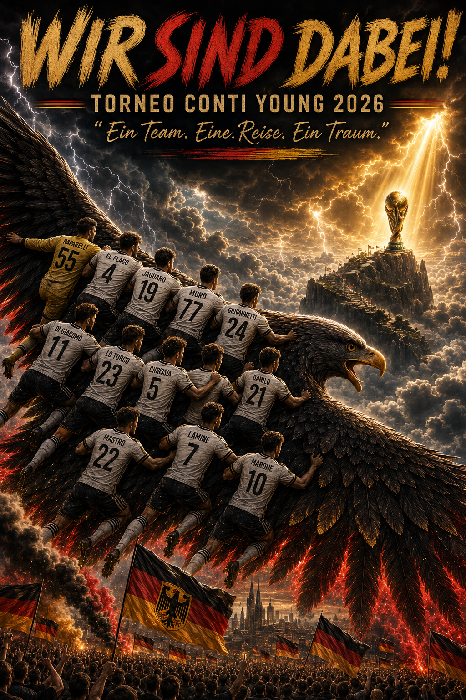
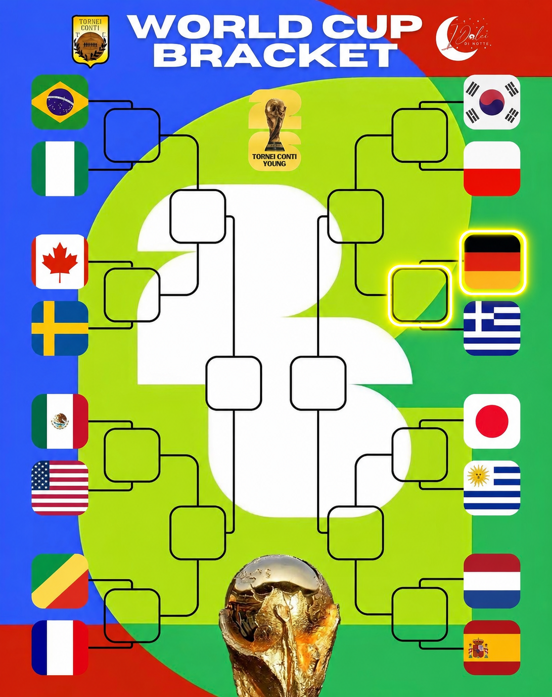

Torneo Conti Young - Classifica e Aggiornamenti

L'inizio del Mondiale è ormai alle porte e lo staff tecnico ha voluto fare il punto della situazione in vista di questo appuntamento così cruciale. C'è grande soddisfazione per il percorso netto espresso finora nel girone, ma la consapevolezza che da questo momento in poi ogni sfida sarà da dentro o fuori.
La squadra arriva concentrata, unita e con tanta fame di vittoria. I ragazzi si sono allenati duramente per curare ogni minimo dettaglio e per mantenere altissimo il livello di attenzione. La Corsa Mondiale non permette distrazioni né cali di tensione: serviranno carattere e cuore in ogni singolo secondo sul terreno di gioco.
«Questo gruppo ha dimostrato un valore immenso e un'unione straordinaria. Sappiamo l'importance della maglia che indossiamo e daremo tutto sul campo per onorarla e per regalare grandi gioie ai nostri tifosi, che continuano a spingerci con enorme affetto anche sui social», il messaggio condiviso dalla guida tecnica.
